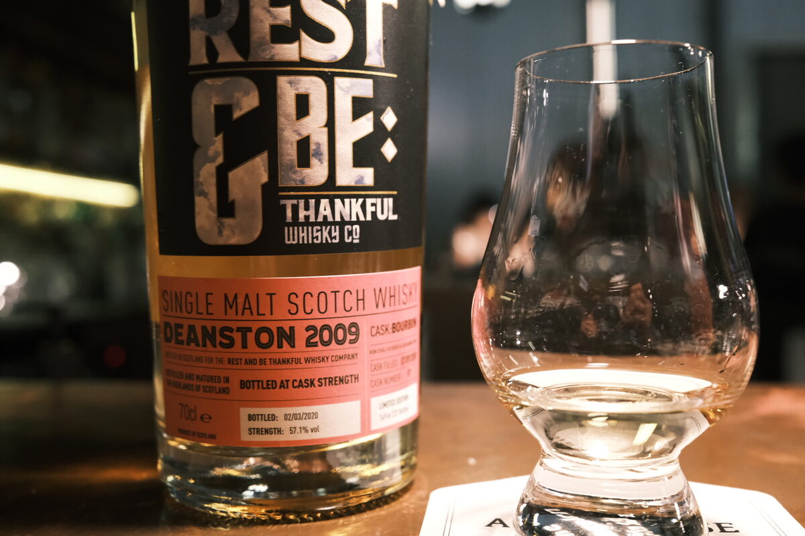

Deanston 2009 Rest & Be Thankful 10 years 57.1% (exbourbon)
Here’s a recent bottle from Rest & Be Thankful (great story behind that name). I’m personally enjoying what Deanston has to offer these days. Read on if you like oranges.
Colour Straw.
Nose Strawberry milk. Lactic — interesting! Rosemary oils and fruit jellies. Chalky, oranges. More oranges. Sweet biscuits. White chocolate and almonds. Lollipops. A little floral.
Palate Sweet and citric. Orange and tangerine forward. Bright acidity, white wine vinegar. A little chalky, like orange sherbet? Then there’s the malt. Still bright, sharp! Sweet pastries. Very heady, boozy. Strong!
Finish Orange candies. Long, eucalyptus. A little milky, lactic at the end. Caramel. Orange juice.
Comments Orange candy and jellies in a bottle! A bit of some lactic funk. Love what Deanston is doing and what RBT is bottling. 87/100.

Posted by Dominic on 03 May 2021